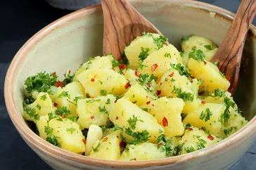

Italian Potato Salad

Description:
This is a classic Italian potato salad that can be found on tables from the north to the south.
Meaning "parsley potatoes", you'll find Patate Prezzemolate everywhere in Italy: formal luncheons,
family get-togethers, weeknight dinners, and even in school cafeterias.
Buon appetito!
Ingredients:
- 25 ounces Yukon Gold potatoes
- 1 tablespoon coarse sea salt
- 4 tablespoons extra-virgin olive oil, divided
- 1 tablespoon white wine vinegar
- 2 cloves garlic, peeled and slightly crushed
- 2 green onions (white part only), chopped
- ½ cup very finely chopped flat-leaf parsley
- salt and freshly ground black pepper to taste
- 1 teaspoon red pepper flakes (Optional)
Steps:
- Combine potatoes and salt in a large pot filled with cold water. Bring to a boil.
Cook until potatoes are tender, but not mushy, about 10 minutes depending
on size. Drain and set aside until cool enough to handle.
- While potatoes are cooking, whisk 3 tablespoons olive oil and white wine vinegar
together in a small bowl. Add garlic and set aside.
- Peel cooked and cooled potatoes and cut into 1-inch cubes. Combine potatoes,
green onions, and parsley in a bowl and lightly toss.Season with salt and pepper.
Drizzle with olive oil mixture and lightly toss,taking care not to break the potatoes.
- Top with remaining 1 tablespoon olive oil and red pepper flakes right before serving.